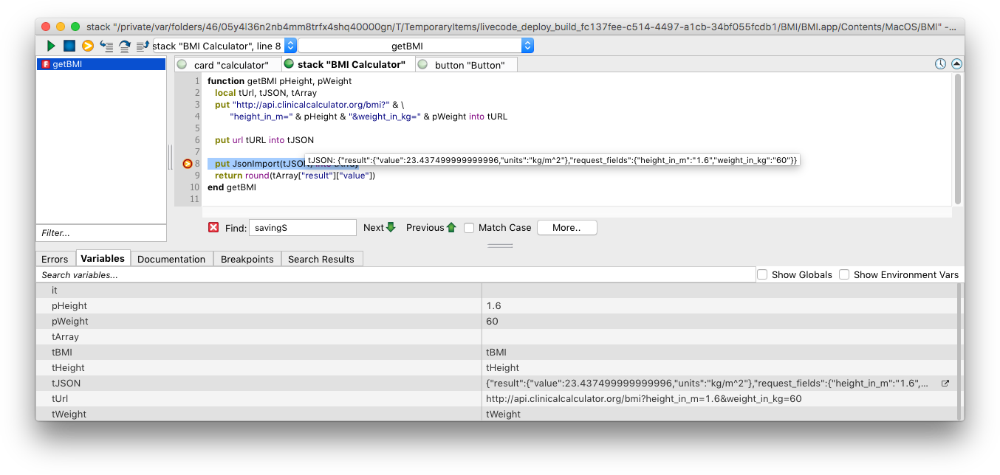
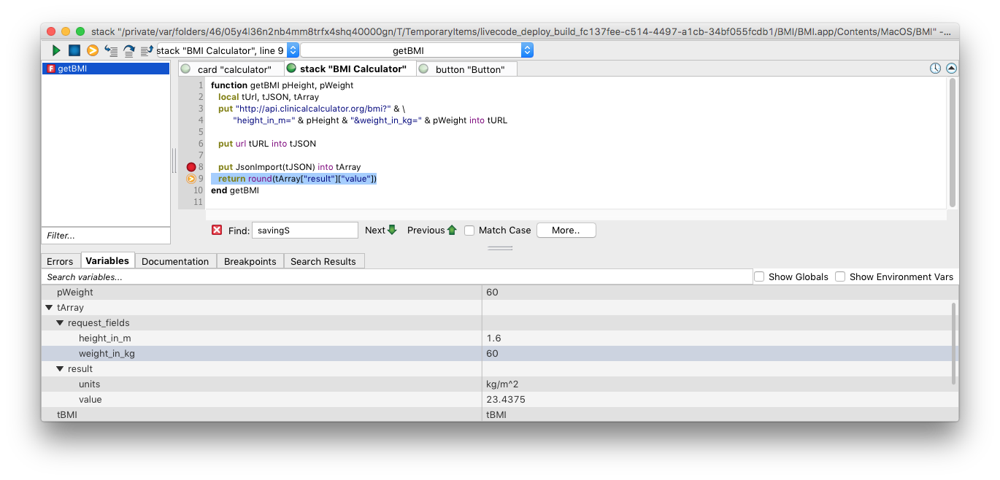
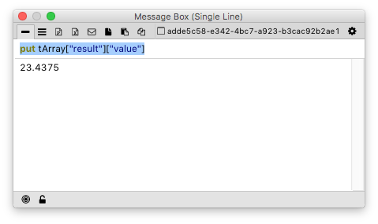
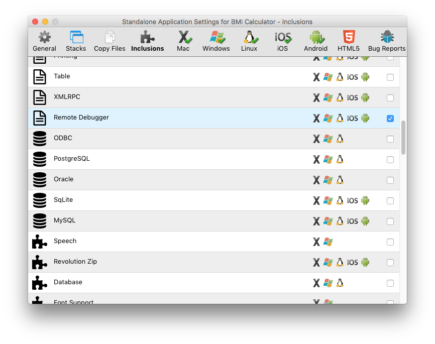
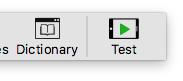
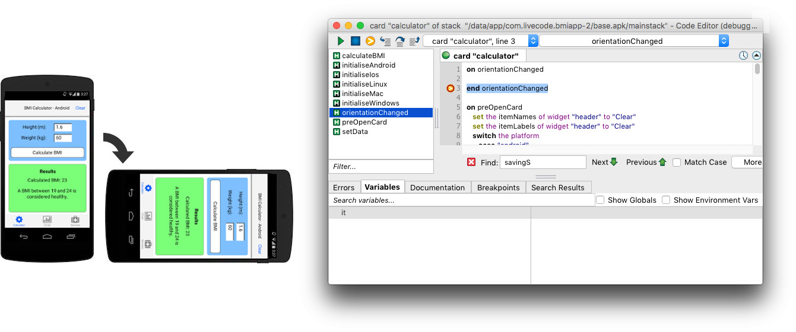

The remote debugger allows you to debug your standalone applications using the IDE script editor just as you can when running them in the IDE.
When the remote debugger is active, breakpoints in a standalone application’s scripts will trigger the debugger in the IDE. The script editor opens, and you can control execution in the standalone using the standard step out/over/in, stop and play buttons.
You can hover over variables in the script editor to view their values,

see all the variables in the current debug context in the variable viewer pane,

and output the values of variables to the message box using put tVar.

If you are using the ‘Test’ button to run your app from the IDE, the remote debugger will be included in the app automatically. Otherwise, if you are saving a standalone, simply include the remote debugger in your standalone application using the Inclusions pane of the standalone settings stack.

When the standalone launches, if there is an instance of the IDE running, it will start a remote debugging session automatically. When there is a remote debugging session running, it is indicated by a green play indicator on the menu bar's Test button.

The standalone you are debugging does not have to be running on the same platform as your IDE. You can debug LiveCode applications running on iPhone / iPad simulators and devices, Android emulators and devices, and virtual machines.
This means in particular it is possible to debug code paths that do not
actually run on the local machine, such as orientationChanged handlers
when a device is turned.

The remote debugger will route any put commands without a target into
the IDE message box. So if you have any such commands for logging
purposes, you will be able to see the output in the IDE.